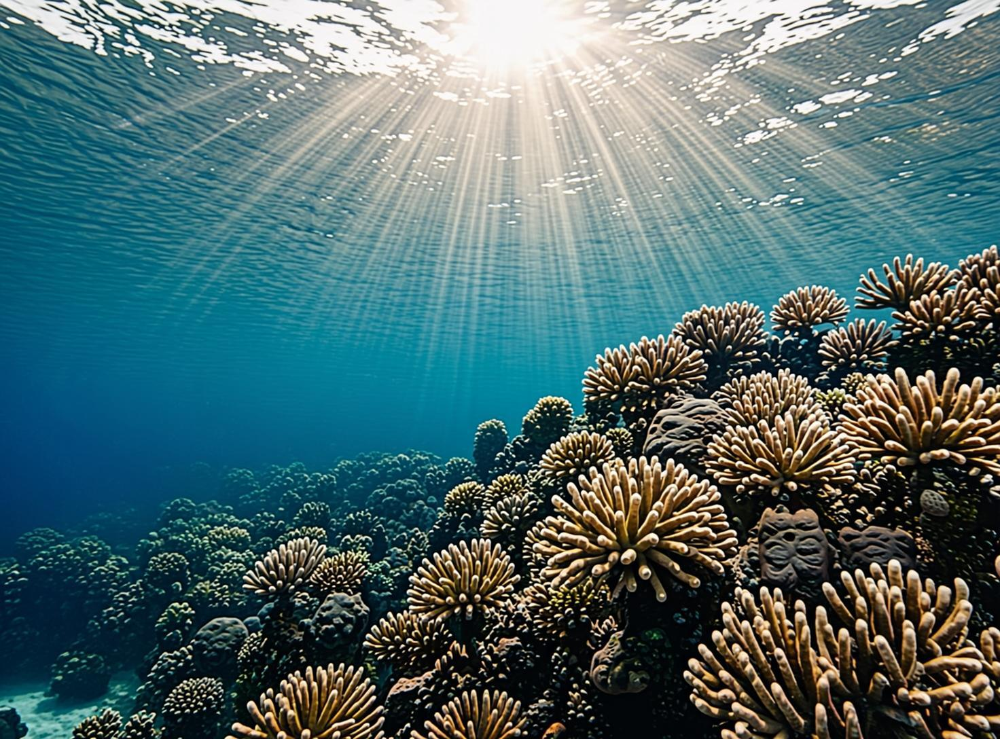
Dory was a fish. She was a regal blue tang fish. She lived in the ocean. She lived in a coral reef. The coral reef was very colorful. It had many plants. It had many animals.
Dory woke up early. The sun was bright. The water was warm. Dory was very happy.
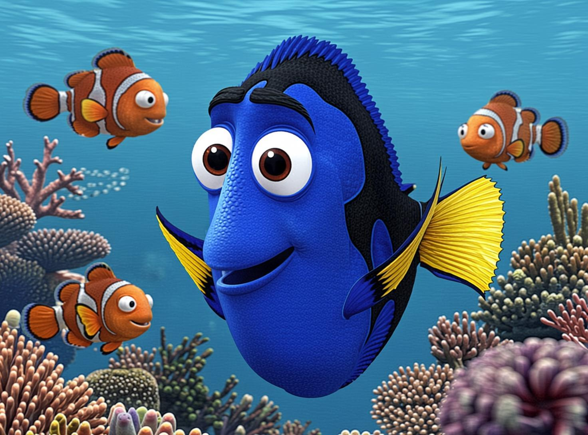
Dory stopped swimming. She looked at her fins. She looked around the coral. She felt like she forgot something. Dory was very forgetful. What did she forget?
"Marlin!" Dory called out loudly. "Nemo!"
Marlin swam over to Dory. He was a clownfish. He had orange and white stripes. Nemo swam over, too. Nemo was Marlin's son.
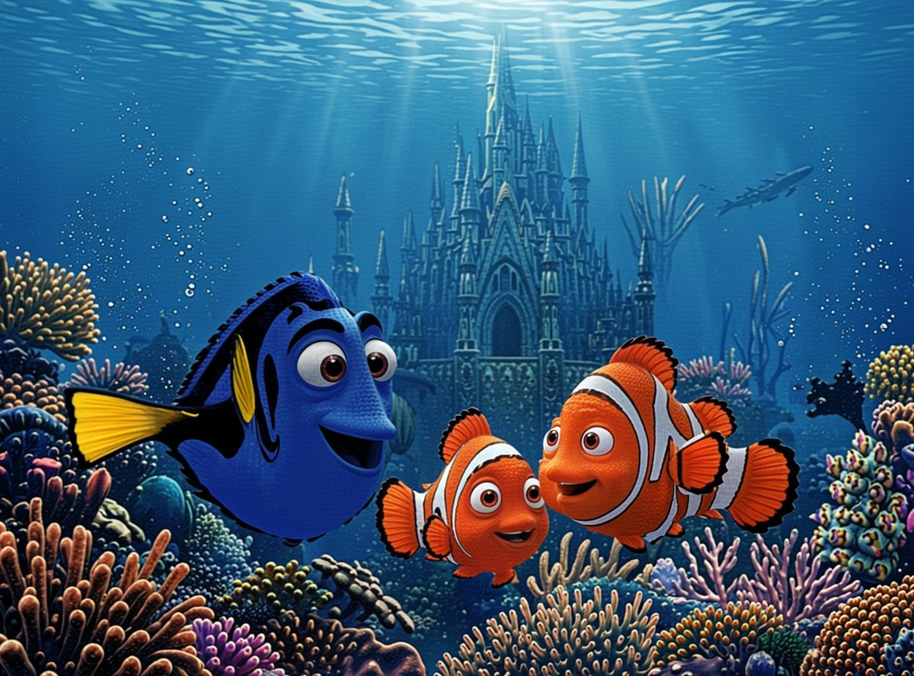
"What is wrong, Dory?" asked Marlin.
"My purple shell is gone," said Dory. "I cannot find it anywhere."
Marlin sighed. "You took it to the Marine Life Institute," he said. "You went there last night."
"Oh no," said Dory. "I must go back."
"We will help you look," said Nemo.
The three friends swam very far. They reached the Marine Life Institute. It was very big. It had many pools and dark pipes. Dory had to choose where to look first.
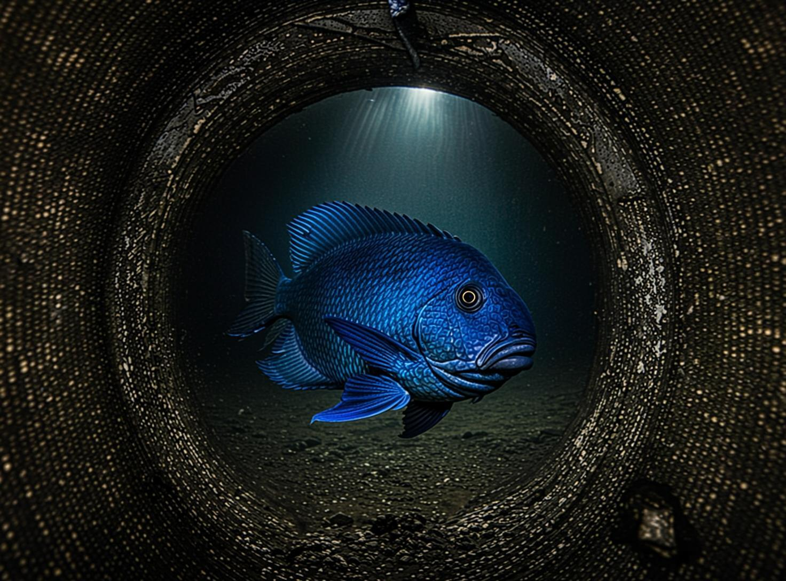
Dory swam into the pipes. Marlin and Nemo followed her. The pipes were dark. The pipes were cold. Dory swam slowly.
She looked at the wall. The wall was green. The wall looked exactly like a plant. Suddenly, two eyes opened!
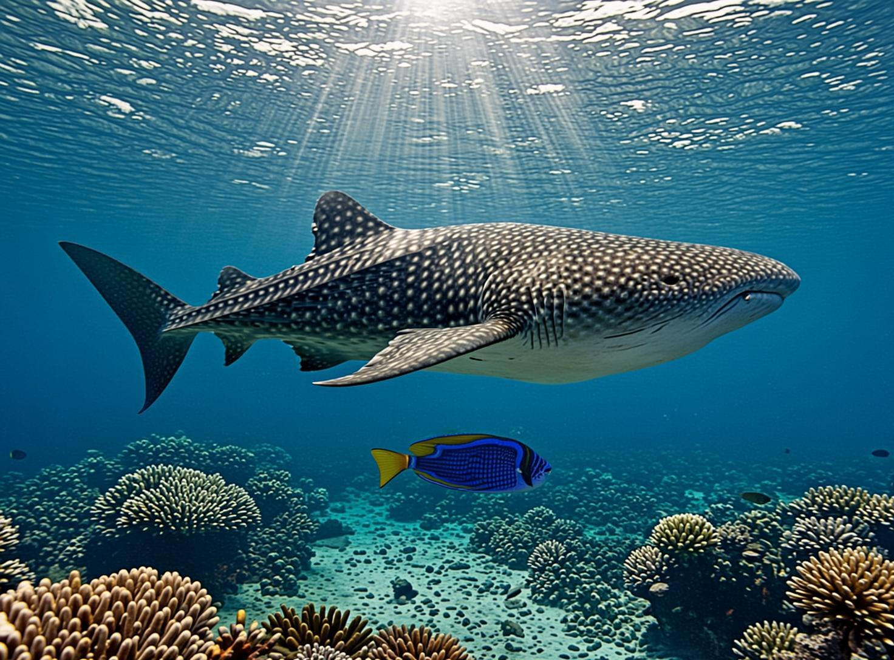
Dory swam to the big open pool. The sun shone on the water. It was very bright. Marlin and Nemo swam behind her.
They saw a giant shadow in the water. It was Destiny! Destiny was a whale shark. Whale sharks are the largest living fish. She had dark skin with light spots.
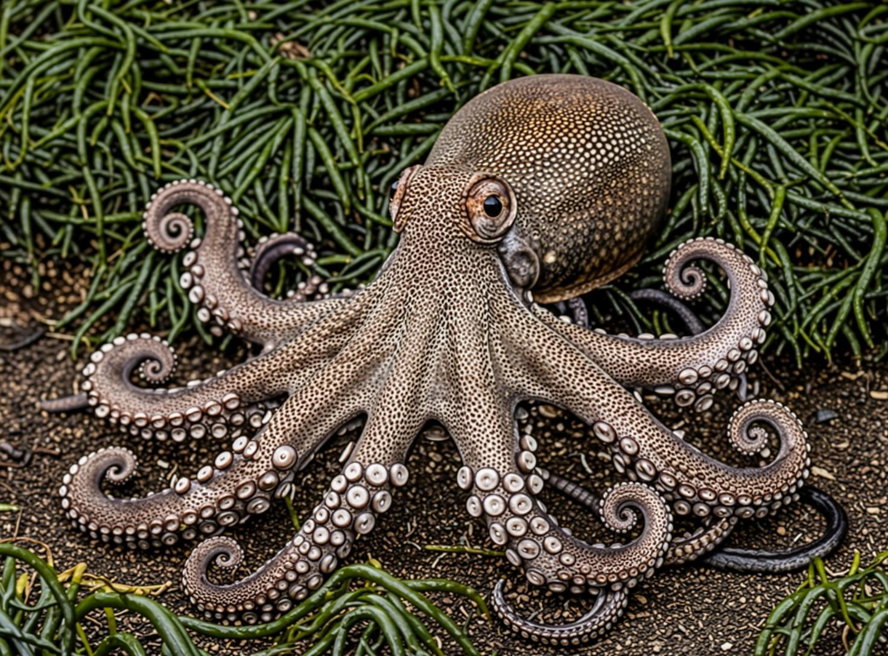
It was Hank! Hank was an octopus. He was very good at hiding. He could change his color and his texture. This is called camouflage.
"Hello, Hank," said Dory.
Hank frowned. He was grumpy. "What do you want, Dory?" he asked.
"I lost my purple shell," Dory said. "Did you see it?"
Hank rolled his eyes. He moved his long tentacles. "Yes, I saw it yesterday. But you dropped it. Maybe you dropped it in the kids' Touch Tank. Or maybe you dropped it down in the Deep Tank."
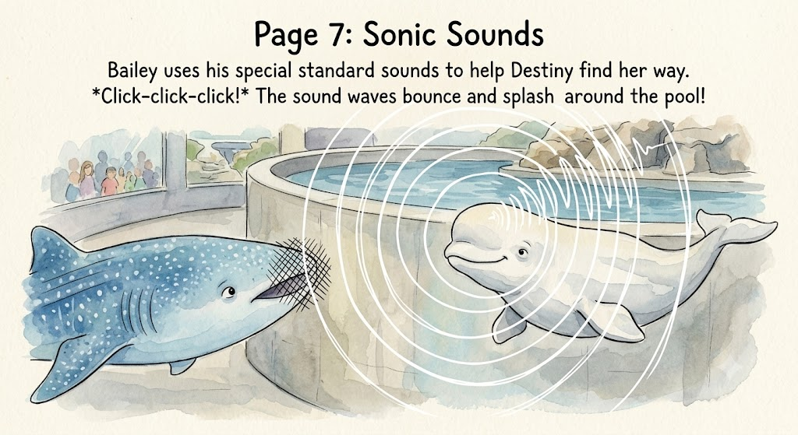
Destiny swam fast. She bumped her head on the wall. "Ouch!" said Destiny. Destiny could not see well. She was nearsighted.
"Hi, Dory!" Destiny smiled. She opened her very wide mouth.
Then, they heard a loud noise. "Squawk! Chirp!" It was Bailey the beluga whale. He was entirely white. He had a big round melon on his head. Bailey used his melon to make sounds. This is called echolocation.
"I hear a small shell," said Bailey. "My sonar says it is in the Kelp Forest."
"No," said Destiny. "I saw a purple flash near the Quarantine pool."
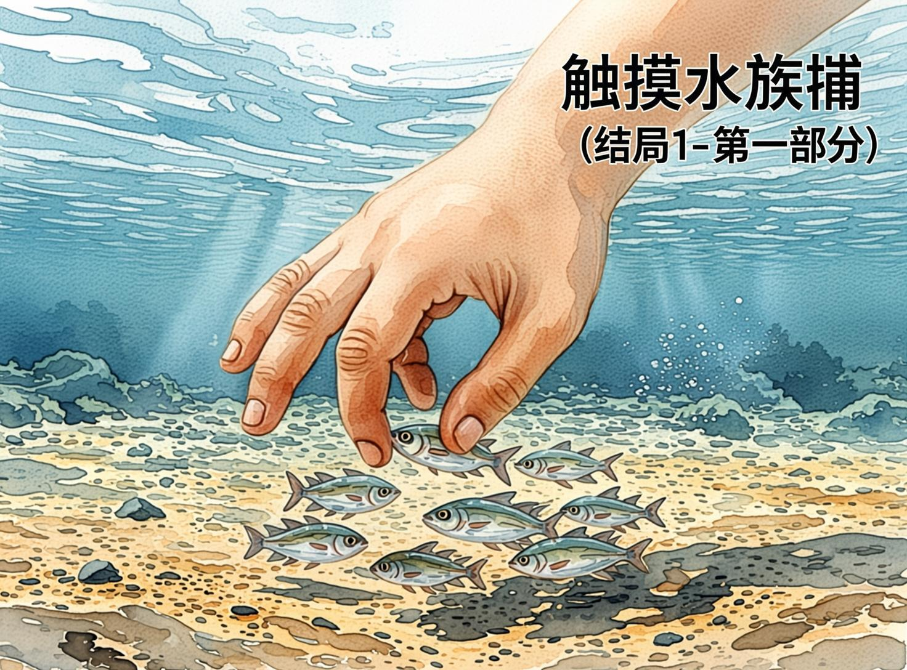
Dory swam to the Touch Tank. The water was very shallow. Dory looked around. She looked under a rock. She looked near the glass.
"There it is!" said Dory. The purple shell was resting on the sand. Dory swam to the shell.
But then, a giant shadow fell over her. It was a hand! A human child put a hand in the water. The hand splashed. Dory was scared.
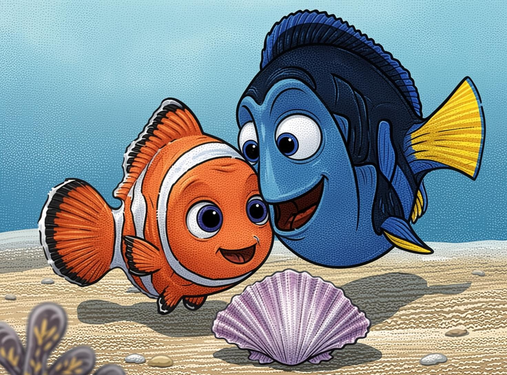
Dory swam to the Deep Tank. The water was deep. The water was dark.
Dory swam down. Marlin and Nemo swam down, too. They swam past rocks. They swam past plants.
"It is very dark," said Nemo.
"Do not be afraid," said Marlin.
Dory looked in the sand. She saw something. It was small. It was purple. It was her shell! Dory swam to the shell. She tried to pick it up. But the shell moved!
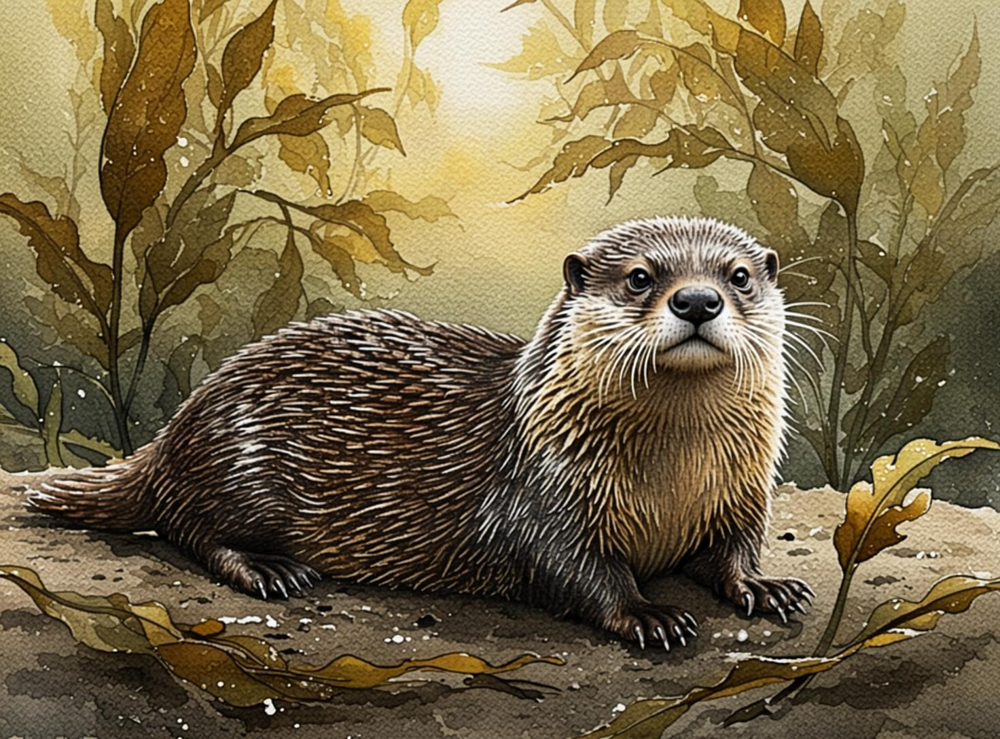
Dory swam to the Kelp Forest. The kelp was tall. The kelp looked like tall green trees in the water. Dory swam through the kelp leaves.
Then, she saw something brown. It was a sea otter. The sea otter had thick fur to keep warm. The sea otter floated on its back. It had a small rock to break hard shells.
"Hello!" said Dory. "Did you see my purple shell?"
The sea otter looked at Dory. The otter pointed its paw down.
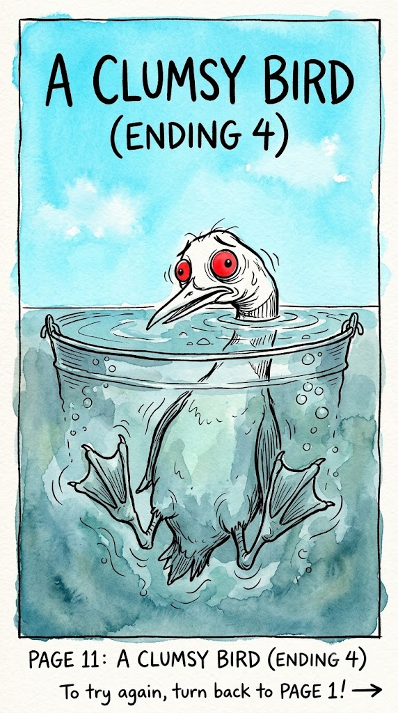
Dory swam to the Quarantine pool. She put her head out of the water. She saw a bird named Becky. Becky was a Common Loon. She had a black head and bright red eyes.
"Hello, Becky," said Dory. "Did you see my purple shell?"
Becky looked at Dory. Becky made a loud sound. "Ooo-ooo!" Becky walked on the land. She looked very clumsy. Loons are awkward walkers.
Becky picked up a yellow bucket. She dropped it. SPLASH! The bucket fell right on top of Dory! Dory was trapped inside. Marlin and Nemo pushed the bucket very hard. Finally, the bucket tipped over and Dory swam out.
Becky flew away. The purple shell was not there. Destiny made a mistake. Dory was tired. She decided to go home without her shell.
THE END. (You got trapped in a bucket and lost the shell. Try again!)
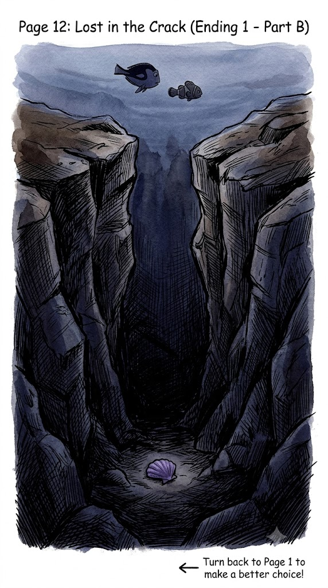
More giant hands came into the water. The children wanted to touch the fish.
"Watch out, Dory!" yelled Marlin.
Dory swam away fast. She hid under a big rock with Nemo and Marlin. The children did not see Dory.
But a child kicked the water. The purple shell floated away. It fell into a deep crack in the rocks. Dory waited a long time. The children finally left. But Dory could not reach the shell. The crack was too deep. Dory was sad. She went home without her toy.
THE END. (You lost the shell. Try again!)
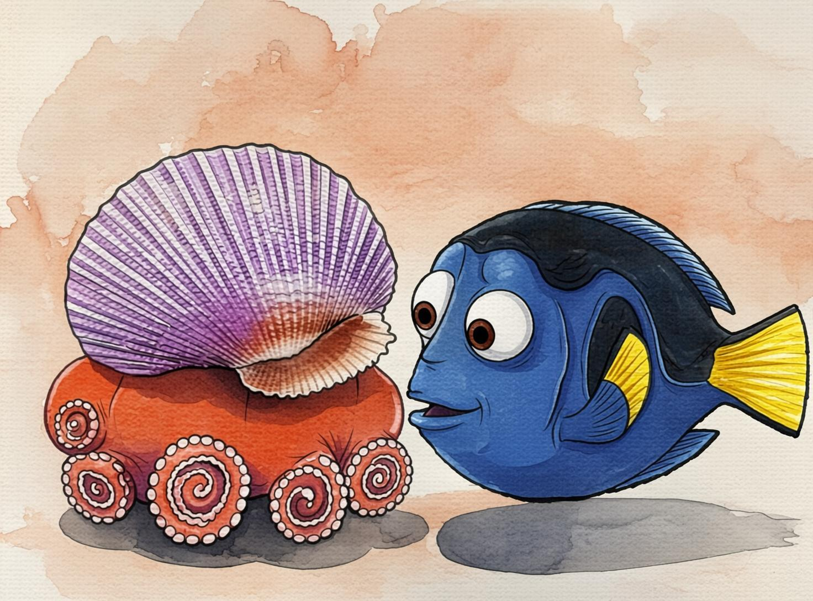
A long arm grabbed the shell. The arm had suction cups. It was Hank! Hank was hiding in the dark. He changed his color to look like the dark sand.
"I found this," Hank said. He gave the purple shell to Dory.
"Oh, Hank! Thank you!" Dory said.
Hank smiled a little bit. "You are welcome, Dory. Now go home. I want to sleep."
Dory held her shell tightly. She was very happy. Marlin and Nemo were happy, too. They all swam back to the reef together.
THE END. (You found the shell!)
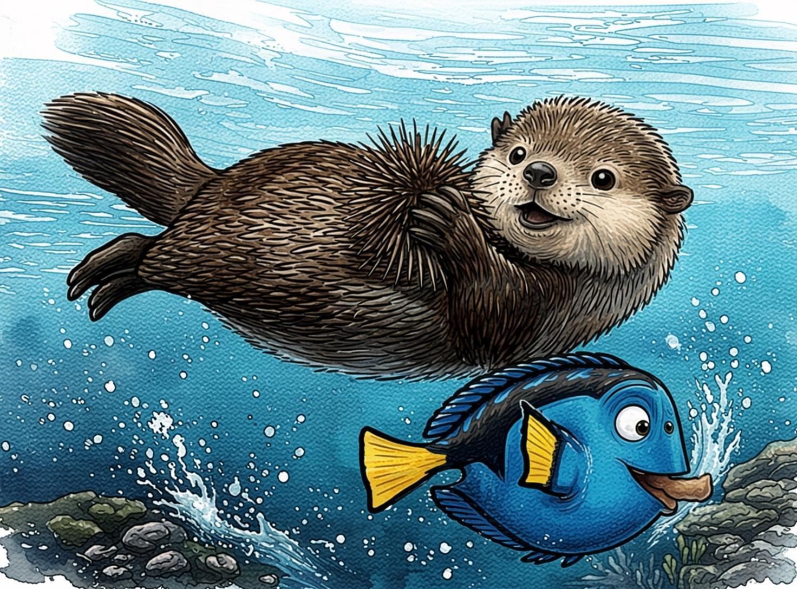
Dory looked down. The purple shell was on the kelp leaves. But a sea urchin was near it. The sea urchin had very sharp spines.
"Be careful!" said Marlin.
The sea otter swam down. The otter picked up the sea urchin. Otters love to eat sea urchins. The purple shell was safe now!
Dory swam down and took her shell. "Thank you, sea otter!" said Dory. Dory found her favorite toy. She went back to the coral reef to play happily.
THE END. (You found the shell and made a new friend!)